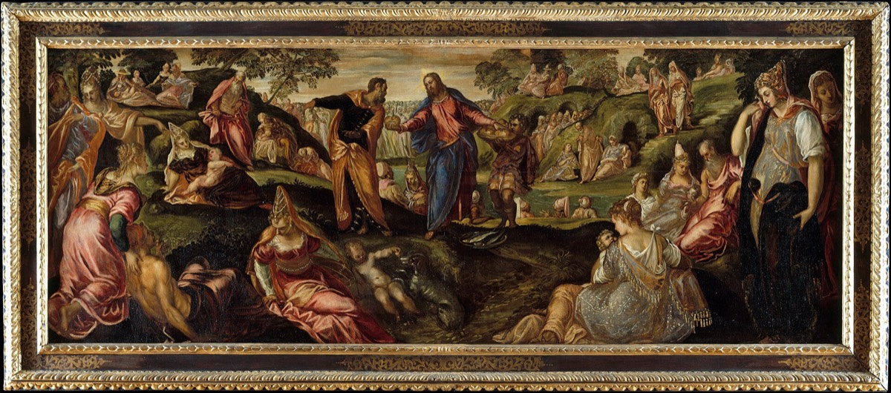

The Bread of Life
The Five Thousand
And Jesus said unto them, I am the bread of life: he that cometh to me shall never hunger; and he that believeth on me shall never thirst.
John 6:35

The talks
- Office John 6:35 and 48-51. This is the first of the great "I am" declarations in John. Find out what that phrase would have sounded like to a Jew who knew Exodus 3:14, and tell us what the claim is.
- Restoration The sacrament. 3 Nephi 18:1-14, where he institutes it on this continent and explains it plainly, and D&C 20:75-79. Show us how the bread in John 6 and the bread on the table are the same teaching.
- Text John 6:22-71. He feeds them, they follow him across the lake, and he tells them something so hard that many of them leave. Take us all the way to verse 66 and do not stop before it.
- World Find out what bread was in that economy, what a barley loaf was and who ate barley rather than wheat, what feeding five thousand men besides women and children would actually require, and what the manna tradition meant to that crowd.
- Witness Andrew, who found the boy with five loaves and two small fishes and then said "but what are they among so many?" Take him through the questions on the facing page.
- Objection John 6:53-56, eating his flesh and drinking his blood. It is the hardest saying in the book and it emptied the room. Say what it means and what it does not, and deal with why he did not soften it when they walked away.
The title
The day before he says this, he has fed a crowd of thousands from a boy's lunch. The next day the same crowd finds him on the other side of the lake, and he tells them plainly why they came: not because they saw the miracles, but because they ate of the loaves and were filled. Then he offers them something else. I am the bread of life. Watch what the crowd does with it. They immediately bring up manna, our fathers did eat manna in the desert, which is their way of saying Moses gave us bread every morning for forty years, what have you got. And his answer is that the manna kept people alive for a day and then they died anyway, and that he is offering the kind of bread a man eats and does not die. This is the chapter where his popularity breaks. He had thousands following him at the start of it and by verse 66 many of his own disciples walked no more with him. This cohort covers the day he gave a crowd exactly what they asked for and then told them it was not what they needed.
Required reading, for every speaker in this cohort
- John 6, straight through
- Exodus 16:1-21
- 3 Nephi 18:1-14
- Matthew 14:13-33
- Exodus 3:13-14
Questions for thought
- He tells the crowd they came looking for him because they ate and were filled. Why say that out loud to people who are following you?
- The crowd brings up manna as if it were a challenge. Find out how the manna worked in Exodus 16 and why it made a good argument for them.
- After the feeding, John 6:15 says they meant to take him by force and make him a king. Why would he refuse that?
- Read verse 66. Many of his disciples went back and walked no more with him. He does not call them back or explain further. Why not?
- He then asks the twelve, "will ye also go away?" Find Peter's answer and sit with it. Is it enthusiasm or is it something harder?
- Find out what "I am" meant in Exodus 3:14 and how many times John records him using that phrase.
- A boy had five loaves and two fishes. Find out what a barley loaf actually was and how far five of them would go.
- Bread was the ordinary food of ordinary people. Why choose the plainest thing on the table as the image?
- Have you ever asked God for something and been given something better that you did not want at the time?